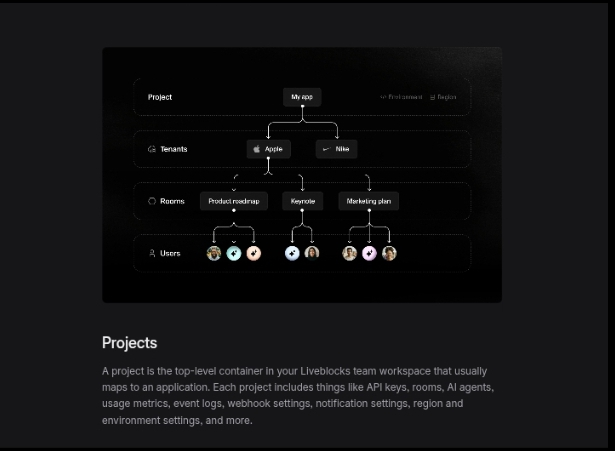
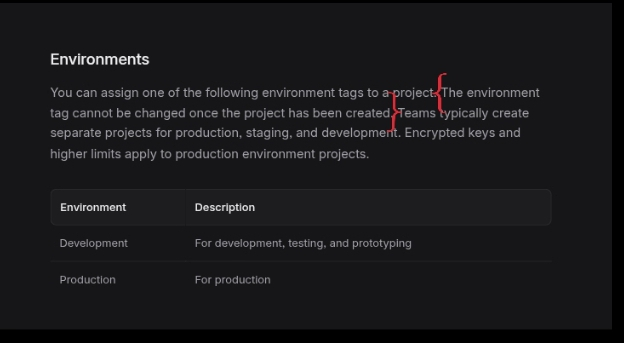
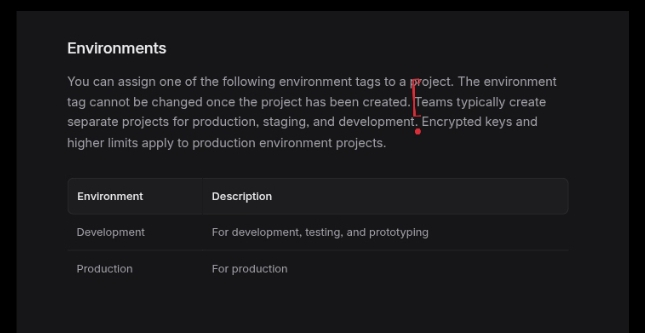

Liveblocks Developer Onboarding Audit
Finding: The Concepts onboarding presents environment selection as a setup attribute but does not emphasize that it is an irreversible architectural boundary.
Finding: The Concepts onboarding presents environment selection as a setup attribute but does not emphasize that it is an irreversible architectural boundary.
The Concepts onboarding presents environment selection as a setup attribute but does not emphasize that it is an irreversible architectural boundary.

The Concepts documentation introduces a project as the top-level container for Liveblocks resources. At this stage, the documentation explains what a project is but does not establish that the environment selection becomes a permanent architectural decision.
Because the Concepts page presents environment selection as part of project setup rather than as an irreversible architectural decision, developers can reasonably underestimate the importance of choosing the correct environment during project creation.

The documentation states that the environment tag cannot be changed once a project has been created. While this limitation is documented, its long-term architectural significance is not emphasized during the initial onboarding flow.
The assumption breaks when a team later decides to promote a Development project to production and discovers that the environment tag cannot be changed after project creation, requiring a new project instead of modifying the existing one.

The documentation recommends creating separate projects for production, staging, and development. Combined with the irreversible environment tag, this indicates that project creation establishes a long-term architectural boundary rather than a temporary setup choice.
Correcting the mistake requires creating a new project and updating deployment workflows, increasing engineering effort, operational overhead, and potentially delaying production rollout.
The documentation accurately states that the environment tag cannot be changed after project creation. However, it does not clearly communicate that this decision establishes a permanent architectural boundary. Emphasizing the architectural importance of environment selection earlier in the onboarding flow would help developers make a more informed project setup decision.